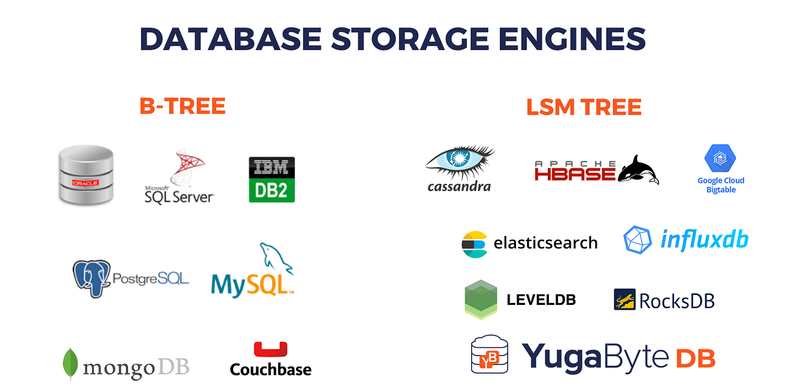
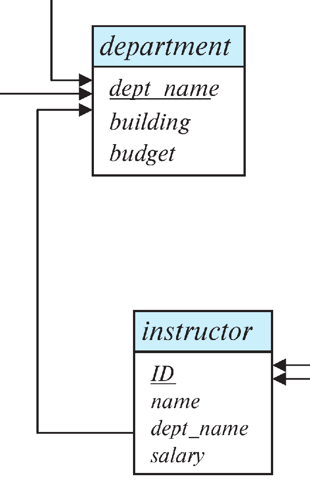

SE 2141 Database Systems
SQL (Structured Query Language) is the industry-standard language designed specifically for managing data held in a relational database management system.

SQL statements are fundamentally split into two primary working components:
We shall start with DDL (Data Definition)!
Before creating tables, we must choose appropriate data domains. The SQL standard provides several core primitive types:
char(n): Fixed-length character string of length $n$.varchar(n): Variable-length character string with a maximum length $n$.int: A standard signed machine integer.smallint: A small integernumeric(p, d): Fixed-point decimal number with precision $p$ digits total, and $d$ numbers to the right of the decimal point. (Essential for currency!)float(n): Floating-point number with precision of at least $n$ digits.We instantiate a relation schema layout using the CREATE TABLE block format:
CREATE TABLE department (
dept_name VARCHAR(20),
building VARCHAR(15),
budget NUMERIC(12, 2),
PRIMARY KEY (dept_name)
);The SQL DDL allows us to declare rules that the engine automatically enforces on data adjustments:
PRIMARY KEY (A_1, A_2, ...): Ensures values are non-null and completely unique across rows.FOREIGN KEY (A_1, A_2) REFERENCES s: Ensures values must match values in the primary key of target relation $s$.NOT NULL: Explicitly forbids a specific attribute from storing null values.Let's look at a schema mapping that includes foreign key validation pointers:
CREATE TABLE instructor (
ID CHAR(5),
name VARCHAR(20) NOT NULL,
dept_name VARCHAR(20),
salary NUMERIC(8, 2),
PRIMARY KEY (ID),
FOREIGN KEY (dept_name) REFERENCES department(dept_name)
);
Test your understanding of basic DDL declarations:
char(10) versus varchar(10)?numeric(10,2) instead of a float type column when storing financial balances?dept_name is "Magic" if that department does not exist in the referenced table?What happens when your structural design schema inevitably needs updates?
DROP TABLE instructor;
ALTER TABLE instructor ADD middle_name VARCHAR(15);
ALTER TABLE instructor DROP COLUMN salary;
Clarifying modification behaviors:
DROP TABLE command?ALTER TABLE table_name ADD attribute_name data_type; on an active table already populated with millions of rows, what value will the database initially give to that new column for all old rows?CREATE TABLE command binds explicit domain types (like int, varchar, or numeric) to attributes.PRIMARY KEY and FOREIGN KEY keeps data reliable at the database engine layer.ALTER TABLE and DROP TABLE provide mechanisms to update schemas over time.